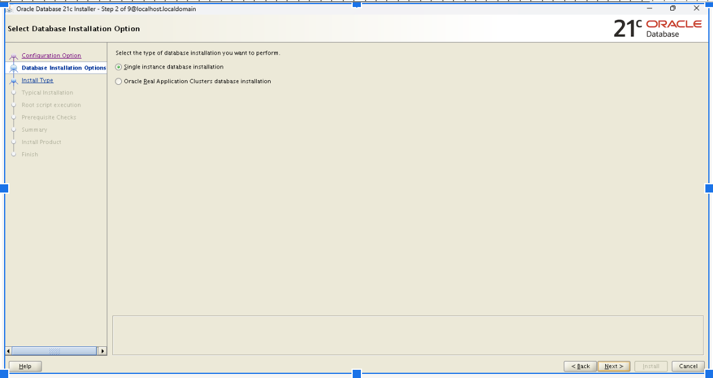
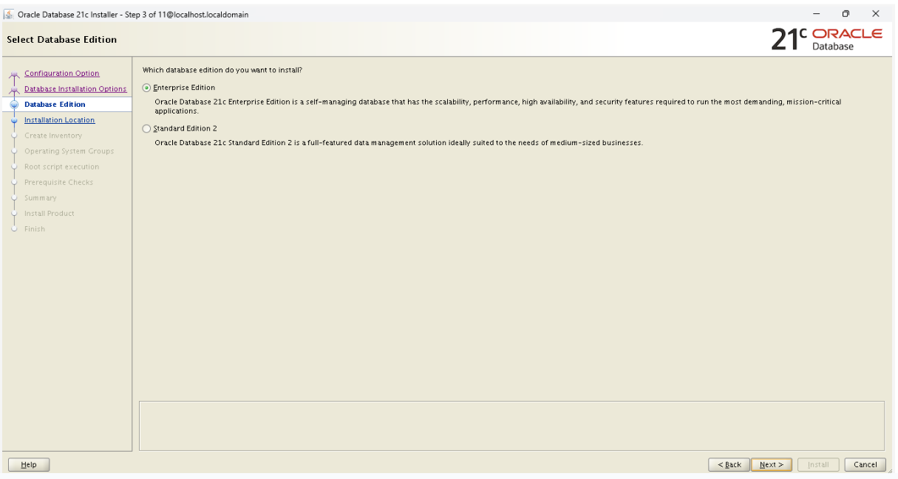
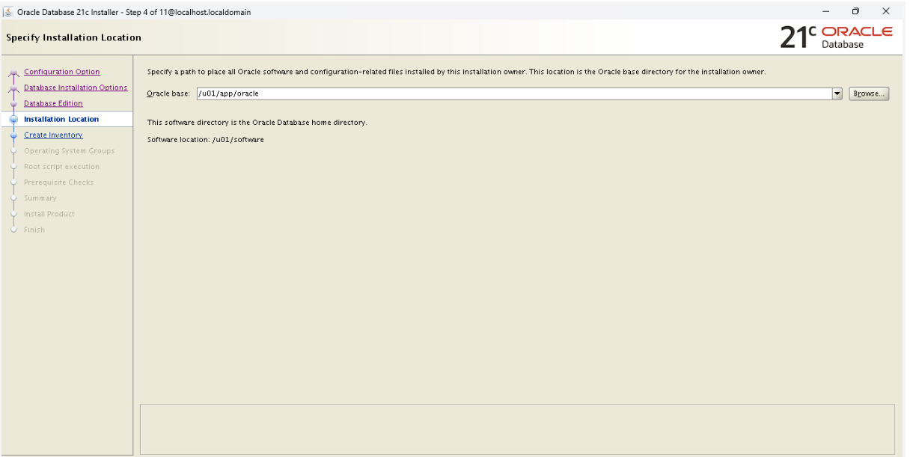
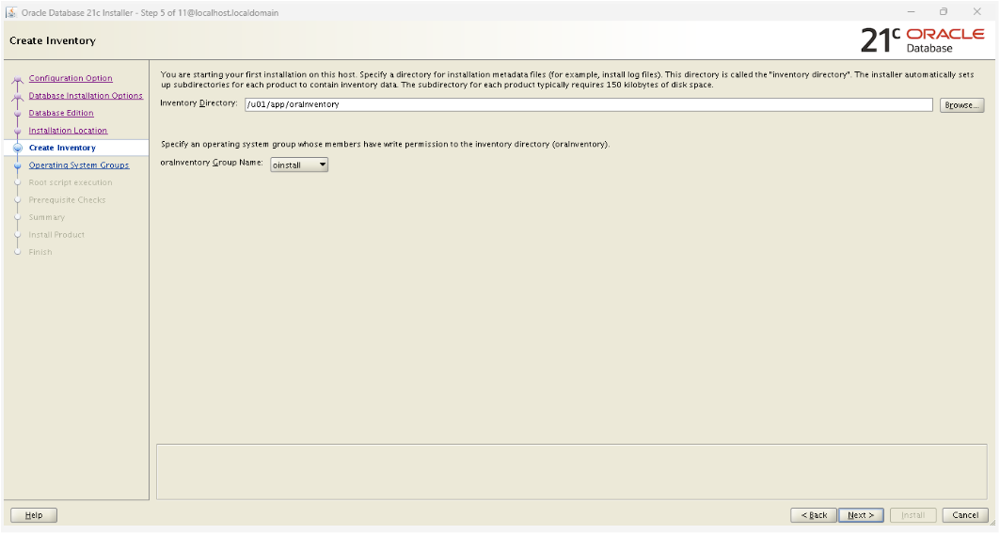
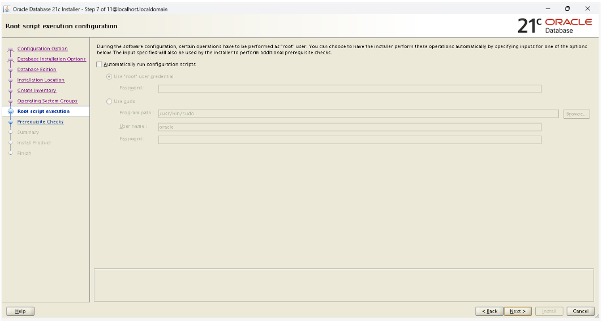
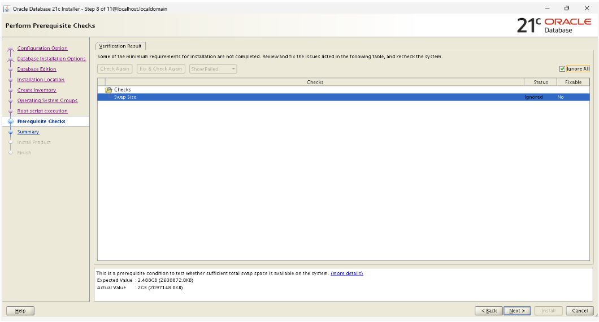
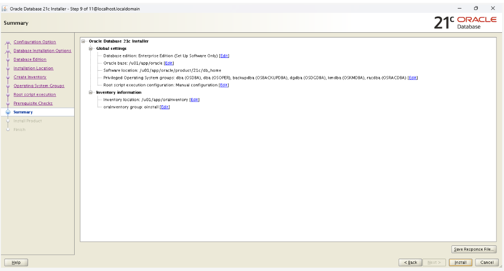
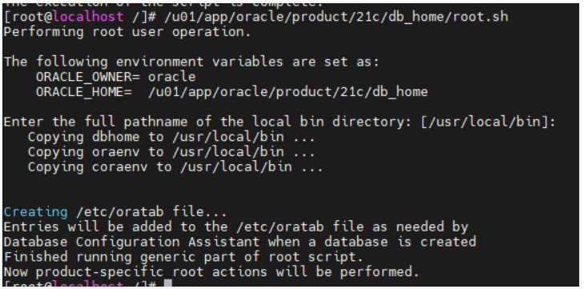

Cài đặt Oracle 21c trên Oracle Linux 7
1. Giới thiệu
Bài viết này hướng dẫn cài đặt Oracle 21c (Standalone) trên Oracle linux 7.9
2. Cài đặt oracle linux 7.9
2.1. Tải oracle linux 7.9
Tải bản và cài oracle linux 7: OracleLinux-R7-U9-Server-x86_64-dvd.iso Đường dẫn: https://yum.oracle.com/oracle-linux-isos.html
2.2. Cài đặt IP tĩnh
nmcli con mod enp0s3 ipv4.addresses 192.168.88.123/24
nmcli con mod enp0s3 ipv4.gateway 192.168.88.1
nmcli con mod enp0s3 ipv4.dns 8.8.8.8
nmcli con mod enp0s3 ipv4.method manual
nmcli connection up enp0s3
nmcli connection up enp0s3
2.3. Cài ssh nếu chưa cài
sudo yum install -y openssh-server
sudo systemctl enable sshd
sudo systemctl start sshd
sudo systemctl status sshd
cấu hình không cho SSH timeout Mở file cấu hình SSH server:
Chú ý
Thêm hoặc chỉnh sửa hai dòng sau:
- ClientAliveInterval 0
- ClientAliveCountMax 0
- ClientAliveInterval 0 → không gửi gói kiểm tra "alive".
- ClientAliveCountMax 0 → không đếm lần không phản hồi (có nghĩa là không bao giờ ngắt kết nối).
Sau đó khởi động lại SSH server:
3. Cài đặt Oracle Database Software 21c Standalone
3.1. Cài đặt Oracle Preinstall RPM
3.2. Tạo thư mục cài đặt và phân quyền
3.3. Cài đặt Oracle Database Software
Chú ý
Sử dụng tài khoản oracle để cài đặt
Thêm vào biến môi trường
Thêm đoạn script sau:
export ORACLE_BASE=/u01/app/oracle
export ORACLE_HOME=$ORACLE_BASE/product/21c/db_home
export ORACLE_SID=orcl21
export PATH=$ORACLE_HOME/bin:$PATH
{kind=link}
Nhấn ESC và sau đó :wq! Để lưu lại
Thực thi biến môi trường vừa sửa
Kiểm tra biến
{kind=link}
Tạo thư mục /u01/app/oracle/product/21c/db_home
mkdir -p /u01/app/oracle/product/21c/db_home
cd /u01/app/oracle/product/21c/db_home
Sử dụng winscp để copy file LINUX.X64_213000_db_home.zip (https://www.oracle.com/database/technologies/oracle21c-linux-downloads.html) và folder /u01/software
{kind=link}
Giải nén file vừa tại tại: /u01/app/oracle/product/21c/db_home
cd /u01/app/oracle/product/21c/db_home
unzip /u01/software/LINUX.X64_213000_db_home.zip
Các bước cài đặt trên giao diện
Chạy lệnh ./runInstaller ở thư mục /u01/app/oracle/product/21c/db_home
Ở bước này chọn phần Set Up Software Only
{kind=link}
Chọn Single Instance database installation

{kind=link}
Chọn Enterprise Edition

{kind=link}
Nhập đường dẫn cài đặt Oracle Database Software 21c

{kind=link}
Nhập đường dẫn inventory directory

{kind=link}
Chọn như hình bên dưới:
{kind=link}
Để như mặc định, bấm Next

{kind=link}
Trình cài đặt sẽ kiểm tra xem server của bạn có đáp ứng các yêu cầu của phần mềm hay không Danh sách các vấn đề sẽ được liệt kê ở màn hình tiếp theo. Nếu lỗi không nghiêm trọng, bạn có thể chọn Ignore All để bỏ qua.
Sau đó ấn Next.

{kind=link}
Màn hình tổng quan các thông tin trước khi cài đặt

{kind=link}
Quá trình cài đặt bắt đầu diễn ra
{kind=link}
Ở giữa quá trình cài đặt, trình cài đặt sẽ yêu cầu bạn chạy script bên dưới bằng quyền root. Đừng bấm OK vội ở bước này
Mở tab khác ssh bằng root, chạy các lệnh
{kind=link}
{kind=link}

3.4. Cài đặt listener
Chú ý
Sử dụng tài khoản oracle để cài đặt
Chạy lệnh netca trong /u01/app/oracle/product/21c/db_home/bin/ để cài listener
Chọn trên giao diện như sau:
{kind=link}
{kind=link}
{kind=link}
{kind=link}
{kind=link}
{kind=link}
{kind=link}
Chạy lệnh để kiểm tra trạng thái listener vừa tạo
{kind=link}
4. Cài database
4.1 Cài database bằng giao diện
Sau đó chạy lệnhSau đó chọn trên giao diện như sau:
{kind=link}
{kind=link}
{kind=link}
{kind=link}
{kind=link}
{kind=link}
{kind=link}
{kind=link}
{kind=link}
{kind=link}
{kind=link}
{kind=link}
{kind=link}
{kind=link}
{kind=link}
{kind=link}
{kind=link}
Kiểm tra db đã họat động chưa
{kind=link}
4.2. Cấu hình database tự khởi động khi server khởi động
Chú ý
Chạy dưới quyền root
Sửa "/etc/oratab" đặt thành 'Y' để khi reboot OS, DB tự lên
Cấu hình mở cổng 1521
Tự động khởi động db khi start server
Tạo thư mục "scripts"
Tạo biến môi trường setEnv.sh
export ORACLE_BASE=/u01/app/oracle
export ORACLE_HOME=$ORACLE_BASE/product/21c/db_home
export ORACLE_SID=orcl21
export PATH=$ORACLE_HOME/bin:$PATH
Đưa nội dung "setEnv.sh" vào file "/home/oracle/.bash_profile":
Tạo file "start_all.sh" và"stop_all.sh" để tạo service startup/shutdown:
cat > /home/oracle/scripts/start_all.sh <<EOF
#!/bin/bash
. /home/oracle/scripts/setEnv.sh
export ORAENV_ASK=NO
. oraenv
export ORAENV_ASK=YES
dbstart $ORACLE_HOME
EOF
cat > /home/oracle/scripts/stop_all.sh <<EOF
#!/bin/bash
. /home/oracle/scripts/setEnv.sh
export ORAENV_ASK=NO
. oraenv
export ORAENV_ASK=YES
dbshut $ORACLE_HOME
EOF
Cấu hình và khởi tạo Service
Sau khi tạo xong các file script ta sẽ tạo các service tự động thực thi các script đã tạo ở trên và kích hoạt các service này lên để khi OS khởi động lại sẽ tự bật Database (thực hiện bằng user root)
Thêm đoạn script này vào dbora.service, nhấn ESC và :wq! để lưu và thoát ra
[Unit]
Description=The Oracle Database Service
After=syslog.target network.target
[Service]
LimitMEMLOCK=infinity
LimitNOFILE=65535
RemainAfterExit=yes
User=oracle
Group=oinstall
Restart=no
ExecStart=/bin/bash -c '/home/oracle/scripts/start_all.sh'
ExecStop=/bin/bash -c '/home/oracle/scripts/stop_all.sh'
[Install]
WantedBy=multi-user.target
Sau khi tạo service xong thì bật và kích hoạt service lên
systemctl daemon-reload
systemctl start dbora.service
systemctl enable dbora.service
systemctl status dbora.service
5. Bật Pluggable
{kind=link}
Nếu ORCL21PDB1 ở trạng thái MOUNTED thì chạy lệnh dưới để mở
tự động open lên cùng mỗi khi chúng ta khởi động CDB.
6. Tạo user
6.1. Tạo common user
Tạo common user trên Container Database (CDB), khi tạo thêm tiền tố C##
CREATE USER c##user1 IDENTIFIED BY password1 CONTAINER=ALL;
GRANT CREATE SESSION TO c##user1 CONTAINER=ALL;
Ghi chú: Nếu không muốn dùng ký tự c## thì dùng tip sau
conn / as sysdba
alter session set "_ORACLE_SCRIPT"=true;
config system dùng câu lệnh: alter system set _common_user_prefix = '' scope=spfile;
select * from all_users;
6.2. Tạo local user
alter session set container=ORCL21PDB1;
CREATE USER phuoctv IDENTIFIED BY phuoctv container=CURRENT;
Gán quyền đăng nhập
Gán tất cả các quyền
Hoặc gán từng quyền
GRANT CONNECT TO phuoctv;
GRANT CONNECT, RESOURCE, DBA TO phuoctv;
GRANT DBA_TABLESPACES , DBA_DATA_FILES , DBA_FREE_SPACE TO phuoctv;
GRANT CREATE TABLESPACE TO phuoctv;
GRANT SELECT ON DBA_TABLESPACES TO phuoctv;
GRANT SELECT ON DBA_FREE_SPACE TO phuoctv;
GRANT SELECT ON DBA_DATA_FILES TO phuoctv;
GRANT SELECT ON DBA_TEMP_FILES TO phuoctv;
GRANT CREATE SESSION GRANT ANY PRIVILEGE TO phuoctv;
GRANT UNLIMITED TABLESPACE TO phuoctv;;
GRANT CREATE VIEW, CREATE PROCEDURE, CREATE SEQUENCE, CREATE TRIGGER to phuoctv;
GRANT ALTER ANY TABLE to phuoctv;
GRANT ALTER ANY PROCEDURE to phuoctv;
GRANT ALTER ANY TRIGGER to phuoctv;
GRANT DELETE ANY TABLE to phuoctv;
GRANT DROP ANY PROCEDURE to phuoctv;
GRANT DROP ANY TRIGGER to phuoctv;
GRANT DROP ANY VIEW to phuoctv;
7. Kiểm tra kết nối
Cài đặt oracle client: https://www.oracle.com/database/technologies/instant-client/downloads.html
Trong file ..\product\19.0.0\client_1\network\admin\tnsnames.ora, thêm:
ORCL21PDB1 =
(DESCRIPTION =
(ADDRESS_LIST =
(ADDRESS = (PROTOCOL = TCP)(HOST = 192.168.88.123)(PORT = 1521))
)
(CONNECT_DATA =
(SERVICE_NAME = ORCL21PDB1)
)
)
Từ Toad for Oracle hoặc các tool quản trị DB để thử kiểm tra kết nối vào db
{kind=link}
8. Một số câu lệnh
Bật listener.
kiểm tra trạng thái listener
9. Tham khảo
-
https://www.youtube.com/watch?v=NnmRJMtwK7Q
-
https://www.tranvanbinh.vn/2021/10/cai-at-oracle-database-21c-tren-oracle.html
-
https://www.tranvanbinh.vn/2023/02/cai-at-oracle-database-21c-rpm-tren.html
-
https://wecommit.com.vn/huong-dan-cau-hinh-service-tu-dong-bat-oracle-database/